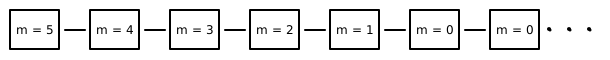
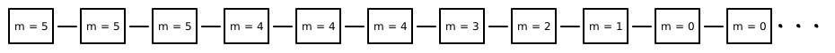
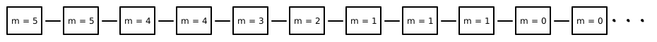
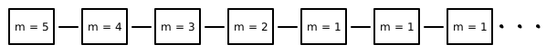
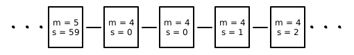
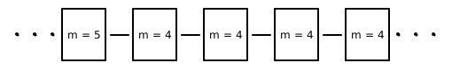

Let’s say you want to specify Timer in TLA+ which counts
down 5 minutes of time.
---------------------------------MODULE TIMER --------------------------------------
EXTENDS Naturals
VARIABLE minutes
CHECK == minutes \in (0..5)
INIT == minutes = 5
NEXT == IF minutes > 0
THEN minutes' = minutes - 1
ELSE minutes' = minutes
SPEC == INIT /\ [][NEXT]_<<minutes>>
====================================================================================Code listed above shows TLA+ specification for the same,
assuming you want minutes to decrease by 1 in single step
until it reaches 0. Ideally you want SPEC to
be INIT /\ []NEXT representing system behavior as shown in
figure.

But alas TLA+ doesn’t allow it. It requires you to
account for stuttering steps which forces you to change
SPEC to
INIT /\ [][NEXT]_<<minutes>>. Some of system
behavior satisfying SPEC is shown below.
 
Next you want to check temporal formula (property) that
eventually minutes will be 0 always. You add
PROP == <>[](minutes = 0) (<>[]
means eventually always) to module and proceed to model
check. TLA+ model checker points out that temporal formula
is not satisfiable and gives counterexample system behavior - which
stutters infinitely after counting down to 1.

We will look into how to avoid this but for now let’s explore why
stuttering steps are enforced in TLA+.
TLA+ makes it easy to specify systems hierarchically.
Suppose we have hierarchy of specifications S1, S2, … , Sn of a system
where S1 is high
level specification and Sn is low level
specification. To connect between them we need to verify that Sn is correct
implementation (low level details) of high level specification S1. This is done by
showing that S2 is
refinement of S1,
S3 is refinement of
S2 so on.
Let’s look at concept of refinement through an example. Suppose you implemented Timer counting seconds.
-------------------------------- MODULE TIMER2 -------------------------------------
EXTENDS Naturals
VARIABLE minutes, seconds
CHECK == /\ /\ seconds \in (0..59)
/\ minutes \in (0..5)
/\ minutes = 0 => seconds = 0
INIT == minutes = 5 /\ seconds = 0
DECRMINUTES ==
/\ seconds = 59
/\ minutes' = minutes - 1
/\ seconds' = 0
INCRSECONDS ==
/\ minutes > 0
/\ seconds < 59
/\ seconds' = seconds + 1
/\ minutes' = minutes
NEXT == \/ DECRMINUTES
\/ INCRSECONDS
\/ /\ minutes = 0
/\ minutes' = minutes
/\ seconds' = seconds
SPEC == INIT /\ [][NEXT]_<<minutes, seconds>>
====================================================================================To verify that TIMER2 is refinement of
TIMER we add following definition in TIMER2
module and model check that SPECIFICAION SPEC implies
PROPERTY RSPEC.
RTIMER == INSTANCE TIMER
RSPEC == RTIMER!SPECTLA+ model checker validates refinement as success. Part
of why refinement worked out without any ceremony is TLA+
insisted about stuttering steps in high level specification. Through
refinement we want to show that for every system behavior of
TIMER2 there is corresponding system behavior of
TIMER which can be shown by converting
INCRSECONDS to stuttering steps of high level specification
and hiding state of seconds (see illustrations).
 
We say that system behaves not as specified by
INIT /\ [][NEXT]_<<minutes>> but with a
modification - there can be finite but arbitrary large number of
stuttering steps. WF_minutes(NEXT) is one of ways of
enforcing this - It is always case that if NEXT is enabled
(system can take NEXT step) forever then NEXT
must eventually happen.
We change system specification to
SPEC == INIT /\ [][NEXT]_<<minutes>> /\ WF_minutes(NEXT)
and model check PROP again. This time it succeeds.